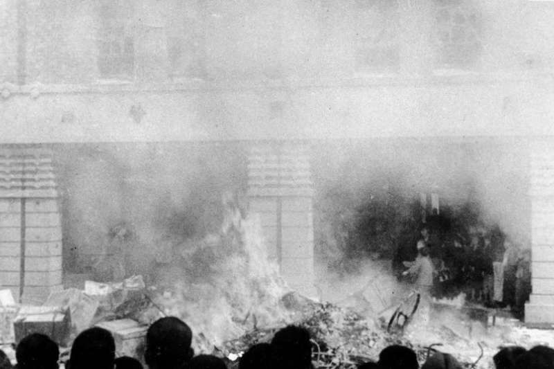
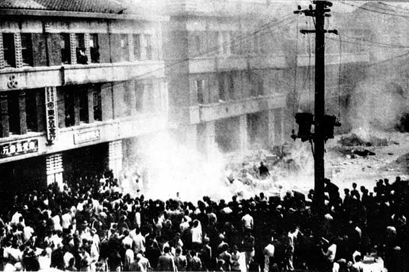

1947年2月27日，專賣局查緝員在臺北市太平町天馬茶房附近查緝私菸，打傷菸販林江邁、誤殺市民陳文溪，激起群眾久積的憤怒。隔日，市民罷市、罷課、罷工，遊行至專賣局抗議、前往長官公署請願，但遭到衛兵以機槍掃射，數人死傷。隔日，市民罷市、罷課、罷工，遊行至專賣局抗議、前往長官公署請願，但遭到衛兵以機槍掃射，數人死傷。
這導致抗爭與衝突全面蔓延，臺灣各大都市爆發暴力事件，軍隊開槍鎮壓，死傷多人。為了解決爭端、消除積怨，各縣市民意代表、士紳階級組成二二八事件處理委員會，希望藉由政治交涉居中協調，並提出政治改革要求。另一方面，各地民間力量組成武裝部隊，收繳槍械、控制機關等，企圖以武力達成政治改革要求。
陳儀表面上妥協讓步，接受處理委員會意見，但將這次事件視為「叛亂」，向中央政府請調援兵。3月5日，國民政府主席蔣中正派兵前往臺灣。3月10日，陳儀宣布全臺戒嚴，解散處理委員會等社會團體。期間出現大量群眾死傷、失蹤。
其後各地展開清鄉，出現許多冤獄案件。5月16日，魏道明就任臺灣省政府主席，結束戒嚴與清鄉。二二八事件導致大量臺灣籍居民遭到逮捕、槍斃或失蹤，包括無關抗爭的菁英人士。
何謂228事件
歷史角度上的228事件
罹難者家屬的228事件
對於罹難者家屬而言，二二八事件帶來的不僅是失去家人、親屬而已，更是威權統治下帶來無法抹平的傷痕。當時的家人就如此不明不白地消失。
罹難者家屬也開始無法信任身邊人，每天擔心、害怕著何時祕密警察會找上門，擔心著自己的一舉一動都被監視。深怕有天因為自己的言論或舉動就被帶走，再也無法回家。
相關照片
228事件的後續
白色恐怖
二二八事件發生後，當時的國民政府仍然持續派兵鎮壓、肅清異議份子，在其後4-50年間被稱為白色恐怖時期。在白色恐怖時期，有許多知識分子、無辜人民被警察逮捕後便再也無聲無息；隨著國共內戰局勢轉變，中華民國政府在1949年移往臺灣，因為懷疑臺灣人民忠誠、擔憂中國共產黨份子潛伏，政府以情報機構多線內部偵防，透過情報佈建、逮捕偵訊等手段，追捕、清查、清理參與事件的民眾；同時以兩岸對立衝突局面的威脅，實行戒嚴統治，箝制新聞自由、言論自由、集會自由等>
從過去到現在
政府相關處理
平反調查
- 1987年2月，陳永興、李勝雄和鄭南榕等人共同發起二二八和平日促進會，有56個團體加入，訴求政府公開歷史史料、展開調查、出版研究論文和資料、興建紀念碑和紀念館、每年2月28日訂為國訂假日、公開道歉、賠償二二八受難者傷害損失等
- 1990年，隨著臺灣逐漸民主化，中華民國總統李登輝確立處理二二八事件與白色恐怖的調性與框架，逐漸正視二二八事件，積極回應民間要求。1992年2月，行政院公布《「二二八事件」研究報告》，是官方首本研究報告，並修正過去的說法。1995年2月28日，在二二八紀念碑落成典禮，李登輝正式以國家元首身分，代表政府向二二八受難者家屬公開表達歉意。
轉型正義
- 1997年，政府修法將2月28日明訂為國訂假日。
- 2008-2016年間，中國國民黨再度完全執政，馬政府部分接受轉型正義的價值。總統馬英九在任內持續推動二二八事件的記憶保存，參加紀念追思會、提撥基金、常設性的國家紀念館開館營運，但是避談責任追究問題，轉型正義仍在停滯狀態。
- 爾後，蔡英文政府在《促進轉型正義條例》通過之後，成立促進轉型正義委員會，工作觸及司法方面的除罪化等。另一個重要的轉型正義工程推動機構是國家人權博物館的建置，下有白色恐怖綠島紀念園區及白色恐怖景美紀念園區。2018年起，二二八事件紀念基金會開始推動《二二八事件真相與轉型正義報告》研究。